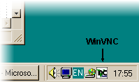

|
|
 |
WinVNC - The Windows NT VNC server
WinVNC is a VNC server that will allow you to view your Windows desktop from any VNC viewer. Because Windows in its present, standard incarnation, only supports a single graphical user being logged in at any one time, WinVNC makes the existing desktop of the PC available remotely, rather than creating a separate desktop as happens with the Unix server. It is only fair to emphasise this: VNC does not make an NT machine into a multi-user server in the same way that Citrix-based software, for example, does. A single NT machine can therefore be accessed by multiple users, but if they all connect at the same time they will all see the same desktop!On the other hand, WinVNC will run on Windows 95, Windows98, Windows NT 4.0, Windows 2000 and on any future Win32-based systems, without the need to replace any system files or run any OS-specific versions of the program. It is a standard application that can be run from the Start... menu and closed down just as easily.
WinVNC can also be run as a service, which means that you can log in remotely, do some work, and log out again. We recommend that you run it in this mode. See below for more details.
And, of course, WinVNC is free. We hope that making the source code available will enable others to suggest improvements to any and all aspects of WinVNC.
If you haven't yet read the 'Getting Started' page, you might like to do that first to give you the general concepts.
Installation
WinVNC is simple to install and to use:- Run the WinVNC setup program. (If you received VNC as a ZIP or TAR archive, you'll need to unpack it first!)
- Select Install Default Registry Settings from the WinVNC folder in the Start menu. This will install the default hooks settings, which are tweaked to cope with some common, uncooperative applications, such as the clock. This is not vital, but will make things run a bit better. See later for more information about the registry settings.
- WinVNC can now be run (in Application mode) from the Start menu. Alternatively, you can use the Start->Settings->Taskbar menu to add a shortcut to your Startup group, which will cause WinVNC to be run every time you log in. NOTE: After some initial tests, we suggest you run WinVNC as a service instead of as an application. See below for more information.
Using WinVNC
On starting, WinVNC will add a small, green version of the VNC icon to the system task bar. Clicking on this icon with the right mouse button will cause a menu to be displayed, with the following options on it:- Properties - This will cause the User Properties dialog to be displayed, allowing the user to change various per-user WinVNC parameters.
- Add New Client - This allows outgoing connections to be made from the server to any "listening" viewer. The name of the target viewer machine can be entered in the dialog. Connections created this way are treated as shared, as of 3.3.3R2. See also the -connect option below.
- Kill All Clients - This will disconnect all currently connected clients from the server.
- About WinVNC - This should be obvious!
- Close - Shutdown the server.
You can connect to the server from another machine using a VNC viewer, as described in the Getting Started page.
WinVNC Properties
The following options are available from the Properties dialog.Incoming Connections
- Accept Socket Connections - The server normally accepts direct, socket-based connections from the vncviewer program. Clearing this tick-box disables direct connection to WinVNC, so that only the CORBA interface used by our internal version may be used to start a connection. (See AT&T internal version info). For the public version, clearing this will disable any incoming connections.
- Display Number - This allows the user to specify the display number which the server will use. There is normally no need to change this from the default of zero.
- Auto - This tick box indicates to WinVNC whether it should use the display number specified in the Display Number box, or whether it should use the first display number not already in use on the server machine.
- Password - Incoming connections must be authenticated to verify that the person connecting is allowed to connect to this machine. This text box allows your password to be specified for authentication.
- Disable Remote Keyboard & Pointer - Any new incoming connections will be able to view the screen but not send any input.
- Disable Local Keyboard & Pointer - This is experimental, and works on NT only. If selected, then the local keyboard and mouse will be disabled during a connection. Useful if you want to log in to a machine from elsewhere and don't want passers-by to be able to use your session.
Note that clicking in a window will generally cause it to be updated, so if you have certain applications which don't update very well, try this! The default update handling settings should be the right ones for most people, and in general you will slow things down by changing them, so don't do this unless you have applications which cause problems.
- Poll Full Screen- Some applications are incompatible with the methods currently used in WinVNC to trap screen updates. For this reason, it is sometimes useful to be able to poll the entire screen in order to check for changes, sacrificing performance for accuracy.
- Poll Foreground Window - Polling only the currently selected window for changes is less CPU intensive than full-screen polling and often gives similar results, for example when using the Command Prompt, which is not normally compatible with WinVNC.
- Poll Window Under Cursor- A variation on Poll Foreground Window, this option causes the window under the mouse cursor to be polled for changes. Both options may be enabled simultaneously if required.
- Poll Console Windows Only- When this option is set, the only windows which will be ever be polled are Command Prompts. This works well in conjunction with Poll Window Under Cursor, to use polling only when the cursor is over a console window.
- Poll On Event Received Only- When this option is set, the screen will only be polled for updates when a mouse or keyboard event is received from the remote client. This is provided for low bandwidth networks, where it may be useful to control how often the screen is polled and changes sent.
Running WinVNC as a service
WinVNC can now be made to run as a service process under both Windows NT and Windows 95/98, by following the instructions outlined below. This allows you to connect to a machine which has nobody logged in to it, for example. On NT, you can also send Ctrl-Alt-Del to the server when it's running as a service, allowing you to unlock a locked workstation, for example. Note that in 'service' mode, many features are changed on a per-machine rather than per-user basis. You can access the per-machine 'Defaults' from the 'Administrative Tools' section of the VNC Start Menu group. The following 'features' should also be pointed out:Windows NT 'features':
- WinVNC will attempt to correctly identify the user and locate their preferred settings in the registry (unless AllowProperties has been used to disable this - see below). To do this requires that a helper application be run when a user logs in, which will pass appropriate information to the main service portion of WinVNC. If the helper fails to run for some reason then WinVNC will continue to operate but it won't know who is logged in, so its settings will be based on the local-machine and default-user settings only.
- Whether or not the VNC password is set per-machine or per-user depends on the settings in the Passwords section of the Control Panel. If Win95 is set to use a different set of registry values for each user then when a user logs in, the password will change from the per-machine VNC password to that user's VNC password. If Win95 is set to use the same settings for all users then the per-machine VNC password will always be used.
- Anything which causes the Windows VNC server to change screen resolution will also cause all viewers to be disconnected, and you'll need to reconnect. Logging in can sometimes do this if the user has a different screen setup from the system default.
- If a user has specified a display number which is different from the default used by the service, viewers will be disconnected as that user logs in.
- When WinVNC is running as a system service, no user-level copies can be run at the same time.
-
Either:
Select "Install WinVNC service" from the WinVNC Administrative Tools section of the Start menu.
Or:
Open a Command Prompt and run WinVNC with the -install option. eg:
D:\> C:
C:\> cd "\Program Files\ORL\VNC"
C:\Program Files\ORL\VNC> winvnc -install - Windows 95 : The WinVNC service is now running and is installed
to run whenever the system boots up into Windows 95.
Windows NT : The WinVNC service is installed and set up to run whenever the machine is booted into Windows NT but IS NOT YET RUNNING! It will run when the machine next reboots. If you want to start it immediately, you can use the Services section of the Windows control panel, or "net start" from the command prompt:
C:\> net start winvnc
The service should now be running, but won't know that you are logged in until you log out and back in again. It won't yet appear on the taskbar. You can run the WinVNC Service Helper from the start menu to tell it who you are! -
If you wish to change the WinVNC settings (eg. password) when it is
not visible on the taskbar, you can use Show User Settings from the WinVNC section of the Start menu.
If you wish to change the default settings used by the service when there's nobody logged in, or no user-specific settings in are use, use Show Default Settings from the Administrative Tools subsection of the WinVNC Start Menu. See below for more information about defaults. - When you wish to install a new version of WinVNC or simply wish to remove WinVNC from your machine, you must first remove the service from the system, using the WinVNC Administrative Tools or the -remove command-line option.
NOTE : Windows 95 : If Win95 has been set to use different settings for each user then the settings used are those of the currently logged in user. If no user is logged in or Win95 is set to use the same settings for all users then the settings used are the Default user settings and are stored per-machine, rather than on a per-user basis as is done when running WinVNC normally. (Under Win95, pressing Cancel on the login dialog gives access to the Default user settings.)
NOTE : A message about failure to remove the service usually indicates that it was not installed in the first place!
Command-line options
The full command-line options available are as follows. You probably won't need anything other than those listed above unless you're a real VNC power-user!
- -run
- Causes WinVNC to run normally & ignore rest of command-line.
- -install
- Installs the WinVNC service and continues reading the command-line.
- -remove
- Removes the WinVNC service and continues reading the command-line.
- -settings
- Tells a running copy of WinVNC to show the User Properties box.
- -defaultsettings
- Tells a running copy of WinVNC to show the Default Properties box.
- -connect host
- Tells a running copy of WinVNC to initiate an outgoing connection to a listening viewer running on the specified machine. This is the equivalent of the 'Add New Client' menu option. You can put multiple -connect options on one command line to connect to multiple viewers at once.
- -kill
- Kills a running copy of WinVNC.
- -about
- Tells a running copy of WinVNC to show its About box.
If no options are given then WinVNC runs normally. Multiple options may
be given, so, for example, to upgrade a currently running WinVNC service to
a new version, you could use:
WinVNC_new -remove -install
which will stop & remove the old copy & install the new one
as a service, or
WinVNC_new -kill -run
which will stop the running copy & run the new version as an application.
WinVNC - Advanced Settings
Extra options have been added to WinVNC for use primarily by system administrators, to tailor the server's behaviour to meet their particular needs. The options are DWORD values which can be set in the system registry, and tools such as the Windows Policy Editor can be used to apply these settings across a large number of machines.Versions 3.3.2 R5 and later use a more sophisticated organisation of these options to allow more flexibility. It also makes it rather complex, so we're thinking about alternative ways of doing this. WinVNC will currently look for settings in the following places:
- Local machine-specific settings. Options specified here are not overridable. Location:
- Local default user settings. Location:
- Local per-user settings. These override the local default user settings. If there is no current user, the username SYSTEM will be used. Location:
- Global per-user settings. These are only read if AllowProperties has not been set to zero (see below) Location:
HKEY_LOCAL_MACHINE\Software\ORL\WinVNC3\
HKEY_LOCAL_MACHINE\Software\ORL\WinVNC3\Default
HKEY_LOCAL_MACHINE\Software\ORL\WinVNC3\<username>
HKEY_CURRENT_USER\Software\ORL\WinVNC3
Advanced Options:
- AuthRequired
By default, all WinVNC servers will not accept incoming connections unless the server has had its password field set to a non-null value. This restriction was placed to ensure that misconfigured servers would not open security loopholes without the user realising. If a server is only to be used on a secure LAN, however, it may be desirable to forego such checking and allow machines to have a null password. Setting this registry value to zero will disable null-password checking by WinVNC. Local machine-specific setting.
AllowLoopback
By default, WinVNC servers disallow any vncviewer connections from
the same machine. For testing purposes, or, potentially, when
using multiple instances of WinVNC on Windows Terminal Server, this behaviour
is undesirable. Setting this registry entry to 1 will cause local-loopback
connections to be allowed. Setting it to zero will filter out such
connections. Local machine-specific setting.
AllowProperties
If this is set to zero, the user is not allowed to view the properties
dialog and hence cannot change any settings, including the password.
Note that this stops all global per-user settings. A valid password must
therefore be in force before using this setting, generally in the local
default-user setting. Local per-user setting.
AllowShutdown
If this is set to zero, the user is not allowed to close down WinVNC.
Local
per-user setting.
AuthHosts
The AuthHosts setting is, unlike the other settings, a REG_SZ string.
It is used to specify a set of IP address templates which incoming connections
must match in order to be accepted. By default, the template is empty and
connections from all hosts are accepted. The template is of the form:
+[ip-address-template]
?[ip-address-template]
-[ip-address-template]
In the above, [ip-address-template] represents the leftmost bytes of the
desired stringified IP-address. For example, +158.97 would match both
158.97.12.10 and 158.97.14.2. Multiple match terms may be specified,
delimited by the ":" character. Terms appearing later in the template take
precedence over earlier ones. e.g. -:+158.97: would filter out all
incoming connections except those beginning with 158.97. Terms beginning with
the "?" character are treated by default as indicating hosts from whom connections
must be accepted at the server side via a dialog box. The QuerySetting option
determines the precise behaviour of the three AuthHosts options.
Local machine-specific setting.
QuerySetting
The QuerySetting allows individual users to tailor the degree of paranoia
expressed by the per-machine AuthHosts setting. It is a DWORD value ranging from
zero (maximum availability) to four (maximum security). The following table
indicates how the value affects the AuthHosts behaviour:
0 - +:Accept, ?:Accept, -:Query
1 - +:Accept, ?:Accept, -:Reject
2 - +:Accept, ?:Query, -:Reject [Default]
3 - +:Query, ?:Query, -:Reject
4 - +:Query, ?:Reject, -:Reject
By default, value 2 (Obey AuthHosts) will be assumed.
Local & global per-user setting.
QueryTimeout
The QueryTimeout setting indicates the number of seconds for which the
Accept Connection dialog (see AuthHosts and QuerySetting options) will be
displayed before rejecting the incoming connection automatically.
Local & global per-user setting.
AutoPortSelect
Causes WinVNC to select the first available display number automatically.
Corresponds to the 'Auto' checkbox in the Properties dialog. Local or
Global per-user setting
CORBAConnect
Only relevant in internal AT&T version. Local or Global per-user
setting
DebugLevel
DebugMode
Run-time logging of all internal debug messages is now supported. Log
data may be output to a file or a console window (or the MSVC debugger
if the program was compiled with debugging active.) Two registry
keys are used:
DebugMode indicates which logging methods to use,
[1 = MSVC debugger]
2 = Output to log file Winvnc.log in the WinVNC directory
4 = Output to a console window, displayed on-screen
Any combination of the above values may be used. e.g. DebugMode=6
will cause output to be sent both to the WinVNC.log file and to the a console
window on the desktop.
DebugLevel indicates how much debug information to present. Any positive integer is valid. Zero indicates that no debugging information should be produced and is the default. A value of around 10-12 will cause full debugging output to be produced. Local machine-specific setting.
ConnectPriority
By default, all WinVNC servers will disconnect any existing connections
when an incoming, non-shared connection is authenticated. This behaviour
is undesirable when the server machine is being used as a shared workstation
by several users or when remoting a single display to multiple clients
for vewing, as in a classroom situation.
ConnectPriority indicates what WinVNC should do when a non-shared
connection is received:
0 = Disconnect all existing connections.
1 = Don't disconnect any existing connections.
2 = Refuse the new connection.
This is a Local machine-specific setting.
InputsEnabled
Corresponds (inversely) to the 'Disable Remote keyboard and pointer'
option in the Properties dialog box. Local or Global per-user setting
LockSetting
WinVNC can be made to take actions when a viewer disconnectsby setting
this value as follows:
0 - none
1 - lock workstation on disconnect (not currently implemented)
2 - logoff on disconnect
Local or Global per-user setting
LoopbackOnly
By default, WinVNC servers accept incoming connections on any network
adapter address, since this is the easiest way of coping with multihomed machines.
In some cases, it is preferable to listen only for connections originating
from the local machine and aimed at the "localhost" adapter - a particular
example is the use of VNC over SSH to provide secure VNC.
Setting this registry entry to 1 will cause WinVNC to only accept local
connections - this overrides the AllowLoopback and AuthHosts settings.
Setting this entry to zero causes WinVNC to accept connections on any adapter
and is the default setting.Local machine-specific setting.
Password
Local or Global per-user setting
PollUnderCursor, PollForeground, PollFullScreen,
OnlyPollConsole, OnlyPollOnEvent
These correspond to the options in the Properties dialog box. Local
or Global per-user settings
PortNumber
specifies the port number to be used for VNC. You will need to disable AutoPortSelect to use this.
Local or Global per-user setting
SocketConnect
This corresponds to the 'Accept Socket Connections' option in the properties
dialog box and is a Local or Global per-user setting.
VNCHooks - Advanced Settings
WinVNC uses a special library, VNCHooks, to hook into the other running applications and retrieve notifications of areas of the screen being changed. The VNCHooks library uses the messages sent to visible Windows to decide which areas need considering for update. Not all applications use the same method of updating the screen, so you can tweak the method used by WinVNC for particular applications by editing the registry. All the entries listed can be found underHKEY_CURRENT_USER\Software\ORL\VNCHooks\Application_Prefs
- use_GetUpdateRect
When a window recieves a message, (WM_PAINT), indicating that it should repaint itself, it is possible to find out precisely which regions have changed, so that WinVNC need only scan those for potential updates,increasing efficiency. However, this can cause graphical glitches occasionally, particularly when an application scrolls the contents of its window, in which case only the revealed section of the window is marked as needing to be updated. If these glitches prove to be a problem then edit the <appname>\use_GetUpdateRect entry in the registry. A value of one indicates that this optimisation will be used, while a value of zero indicates that it will not.
- use_Timer
A number of Windows applications, most notably the Clock program, use WM_TIMER events to trigger updates to their displays, rather than WM_PAINT messages. By default, timer messages are not used to notify WinVNC of potential updates, since many programs use timer events for purposes other than updating the screen. As a result, the clock and a few other applications don't normally update correctly under WinVNC. The fix to this is to edit the <appname>\use_Timer entry in the registry. A value of one indicates that WM_TIMER messages will trigger WinVNC updates, while a value of zero indicates that they will not.
- use_KeyPress
Some Windows applications write characters directly to the screen when a user types into a window, rather than using WM_PAINT messages to cause the text to be redrawn. To fix this, WinVNC can scan the window every time a key is pressed, in order to catch the change. To set this value for a problem application, edit the <appname>\use_KeyPress entry in the registry. A value of one indicates that key presses will cause updates, while a value of zero indicates that they will not.
- use_LButtonUp, use_MButtonUp, use_RButtonUp,
Some Windows applications update the display directly in response to mouse clicks, without using intermediate WM_PAINT messages, for example. In order to catch such updates, it is necessary to trigger WinVNC to update the relevant window whenever the left mouse button is released. To set this value for a problem application, edit the <appname>\use_LButtonUp entry in the registry. A value of one indicates that left-button clicks will cause updates, while a value of zero indicates that they will not. The same rules apply to the middle and right buttons using the appropriate value name.
- use_Deferral
The VNCHooks library catches messages sent to windows before they are dealt with by the window. As a result, sending an update message to WinVNC to indicate the potential change can result in WinVNC sending the updated area to the client before it has actually been redrawn by the application! This is a common problem, especially on multiprocessor versions of NT, so deferred updates are used by default. Deferred updates are handled by posting a custom message back into the window's own message queue rather than posting to WinVNC directly. By the time this custom message is seen again by the VNCHooks library, the message that caused it will have been handled and the update can then be forwarded to WinVNC without danger of being handled prematurely. A few programs don't handle these extra messages in their queue very well, so this optimisation is optional. It can be set by editing the <appname>\use_Deferral entry in the registry. A value of one indicates that deferred updates will be used, while a value of zero indicates that they will not.
Running on other Win32 systems
WinVNC runs fine on NT3.51 but the absence of a system tray means that the Properties dialog cannot be accessed. In addition, Ctrl-Alt-Del from clients cannot be correctly interpreted under NT 3.51, limiting WinVNC's usefulness when run as a service on this platform. It also runs on NT5 beta. If you have a choice we recommend NT4.0 with the latest service packs installed.Problems?
If you have difficulties which are not covered by this document, try reading the FAQ. If that doesn't help then try the mailing list.If you try to contact the developers directly, please remember that VNC has hundreds of thousands of users, and we cannot, in general, respond to individual queries. We will read your message, but don't expect an answer!
For comments, feedback, etc, please see the 'Keeping
in touch' page.
Copyright 1999 - AT&T Laboratories Cambridge